orchard-exterior-replacement-02
Authorized reference screenshots. Attribution retained. Open full-size images to review clarity; capture success alone is not visual acceptance.
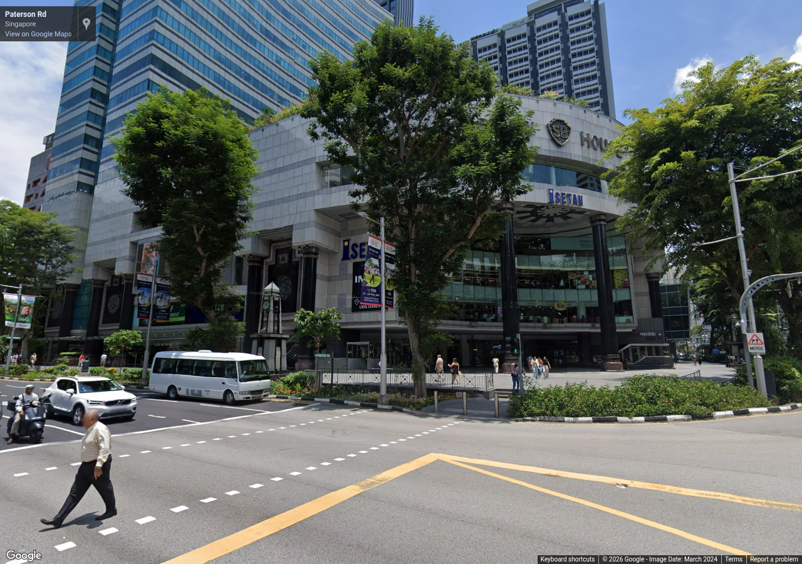
junction-road-02-0 — Replace rejected indoor captures with reviewed street-level ION, TANGS and Wisma reference views.
Source 2024-03, heading 0°, pitch 10°, zoom 1. Metadata / review
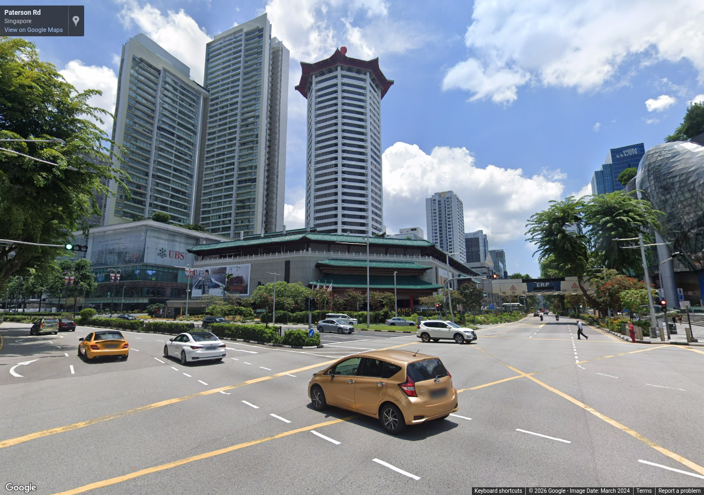
junction-road-02-90 — Replace rejected indoor captures with reviewed street-level ION, TANGS and Wisma reference views.
Source 2024-03, heading 90°, pitch 10°, zoom 1. Metadata / review
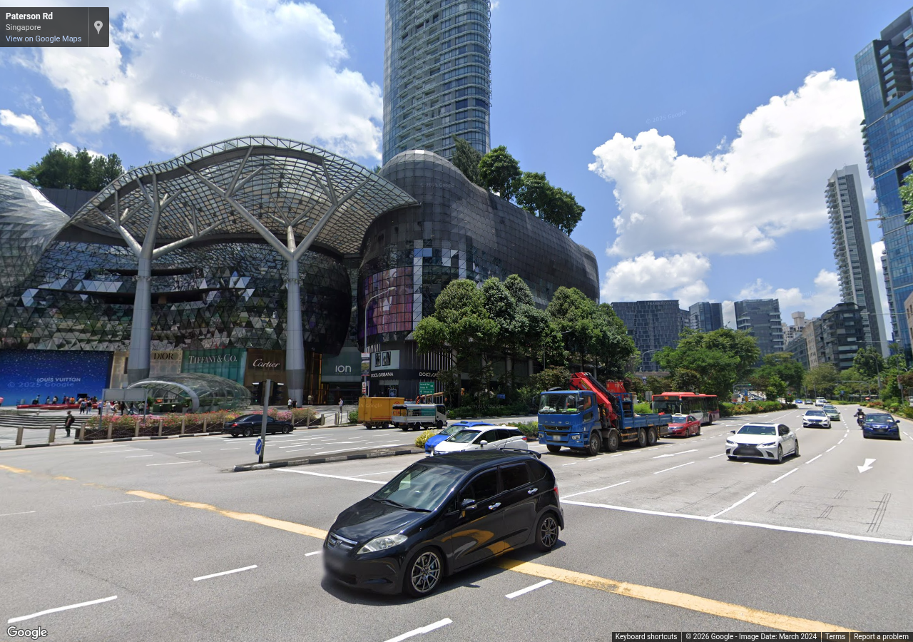
junction-road-02-180 — Replace rejected indoor captures with reviewed street-level ION, TANGS and Wisma reference views.
Source 2024-03, heading 180°, pitch 10°, zoom 1. Metadata / review
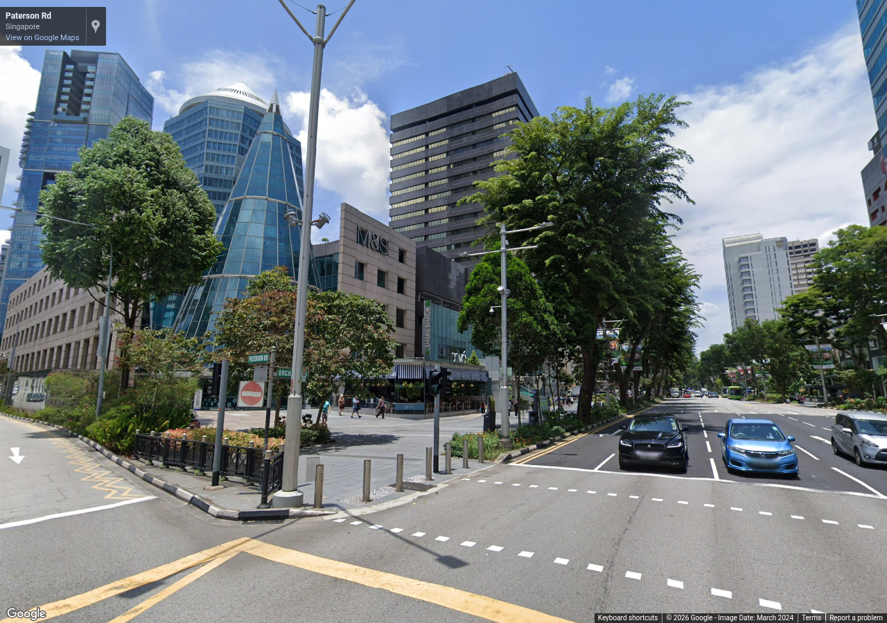
junction-road-02-270 — Replace rejected indoor captures with reviewed street-level ION, TANGS and Wisma reference views.
Source 2024-03, heading 270°, pitch 10°, zoom 1. Metadata / review
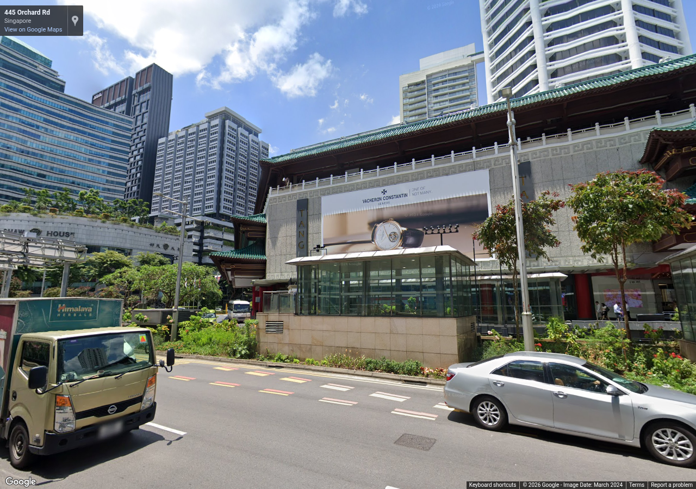
tangs-road-02-0 — Replace rejected indoor captures with reviewed street-level ION, TANGS and Wisma reference views.
Source 2024-03, heading 0°, pitch 10°, zoom 1. Metadata / review
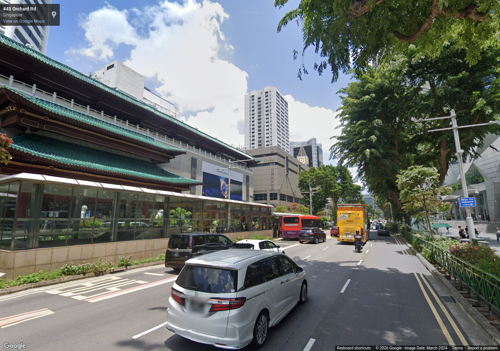
tangs-road-02-90 — Replace rejected indoor captures with reviewed street-level ION, TANGS and Wisma reference views.
Source 2024-03, heading 90°, pitch 10°, zoom 1. Metadata / review
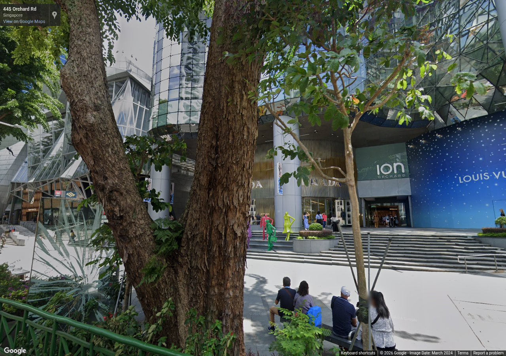
tangs-road-02-180 — Replace rejected indoor captures with reviewed street-level ION, TANGS and Wisma reference views.
Source 2024-03, heading 180°, pitch 10°, zoom 1. Metadata / review
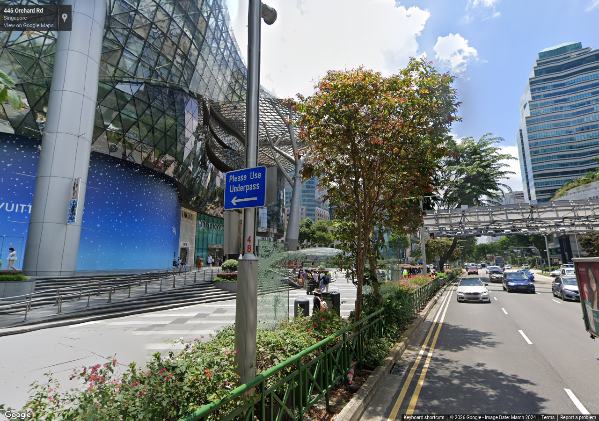
tangs-road-02-270 — Replace rejected indoor captures with reviewed street-level ION, TANGS and Wisma reference views.
Source 2024-03, heading 270°, pitch 10°, zoom 1. Metadata / review
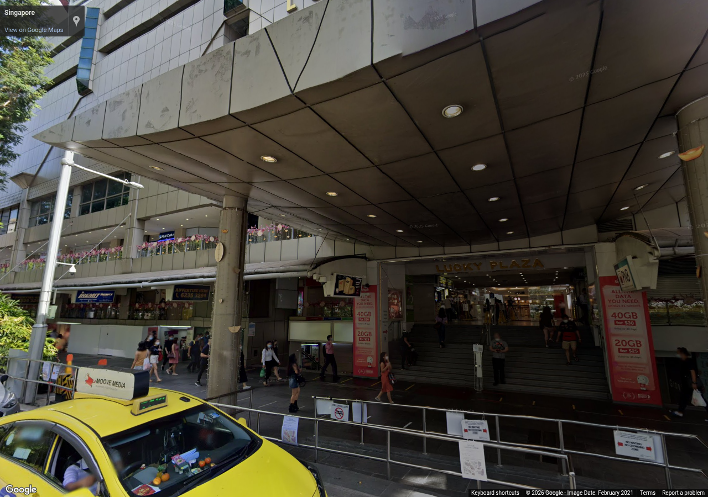
wisma-road-02-0 — Replace rejected indoor captures with reviewed street-level ION, TANGS and Wisma reference views.
Source 2021-02, heading 0°, pitch 10°, zoom 1. Metadata / review
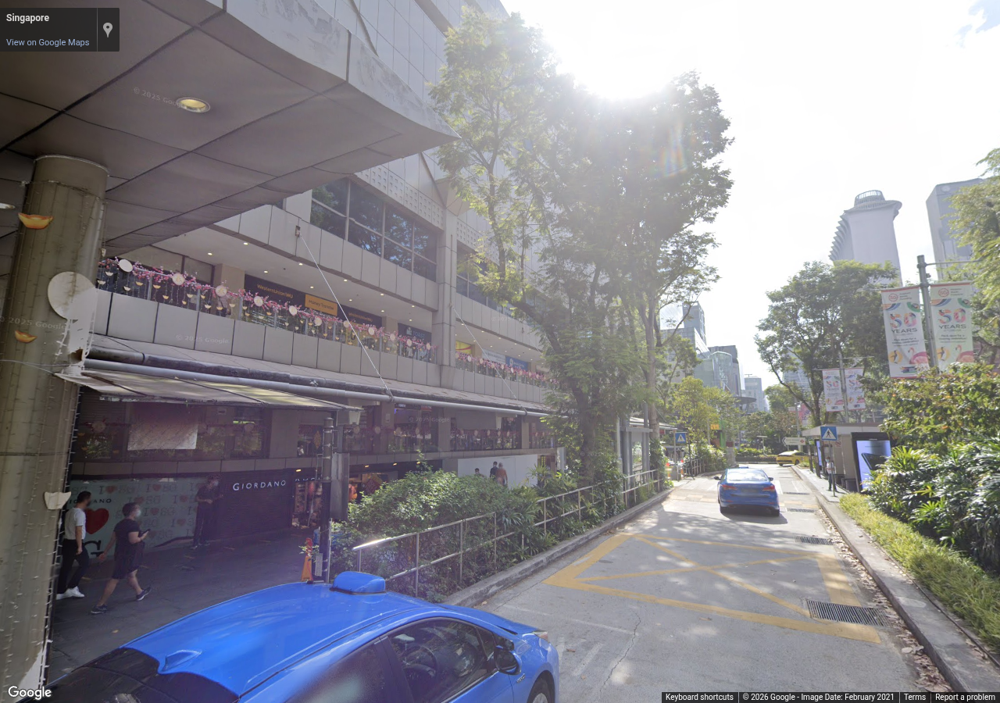
wisma-road-02-90 — Replace rejected indoor captures with reviewed street-level ION, TANGS and Wisma reference views.
Source 2021-02, heading 90°, pitch 10°, zoom 1. Metadata / review
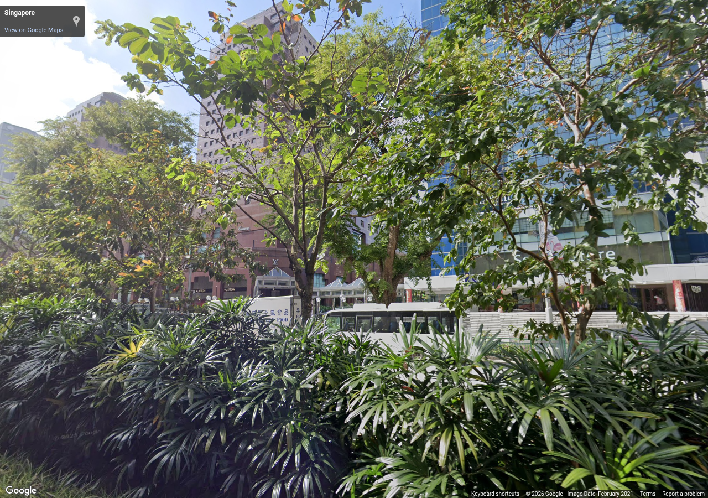
wisma-road-02-180 — Replace rejected indoor captures with reviewed street-level ION, TANGS and Wisma reference views.
Source 2021-02, heading 180°, pitch 10°, zoom 1. Metadata / review
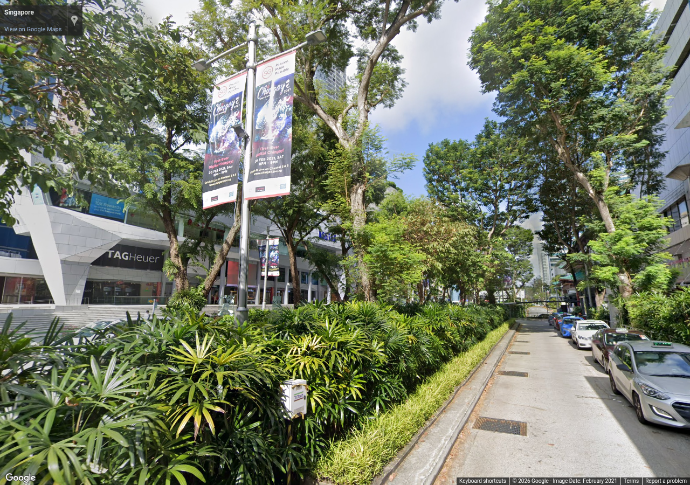
wisma-road-02-270 — Replace rejected indoor captures with reviewed street-level ION, TANGS and Wisma reference views.
Source 2021-02, heading 270°, pitch 10°, zoom 1. Metadata / review